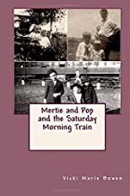

Mertie and Pop
and the Saturday Morning Train
Can you hear the whistle blow?
Do you hear it comin’ round the bend?
It’ll be here before you know!”
In 1928, Mertie was a 10 year old girl, growing up in Kiro, Kansas. Early every Saturday morning, she, along with her Pop, her sister, and her brothers, would make the half hour trek to the train depot in Topeka, Kansas. There, they watched a steam engine roar into the station. It was such an exciting event for all of them! This love of trains remained with them their entire lives. Once a year, a huge event arrived on the train and they were there to see it! This was the first children’s chapter book I wrote and it remains my favorite. I wrote it in honor of my mother who grew up in Kansas with her Mom and Pop and six brothers and sisters. And, because Pop loved trains, they did actually watch the train each Saturday. Once a year, the train brought something special. My mother related this remembrance to me many times. I have dedicated it to her, the little girl from Kansas.